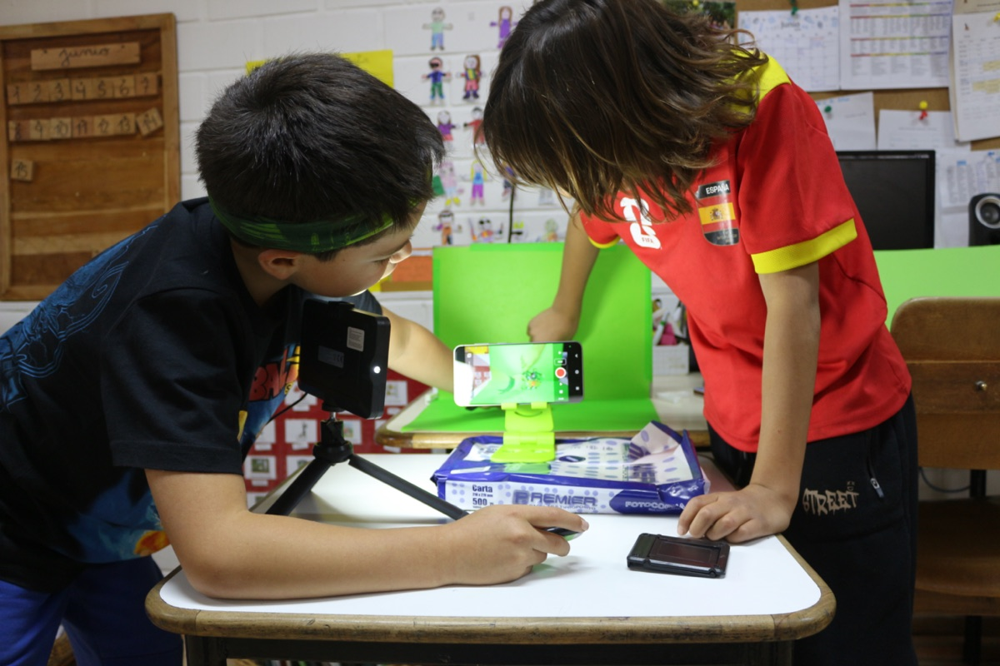
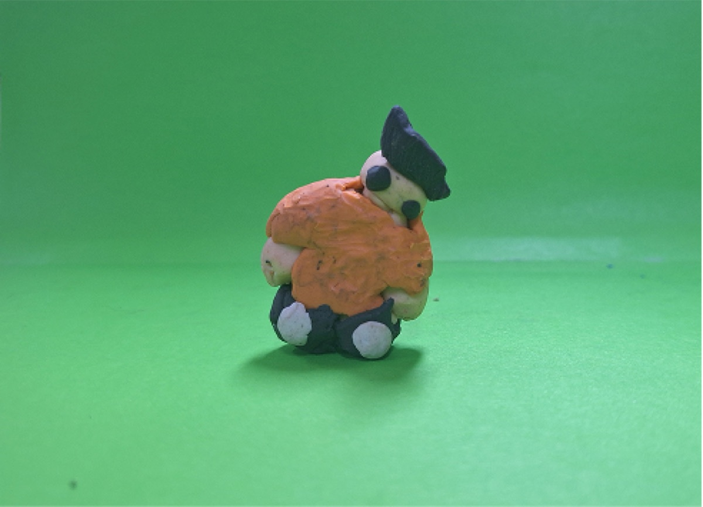
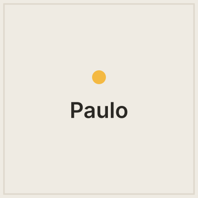
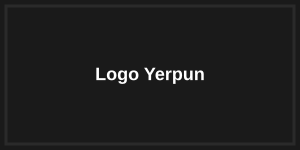
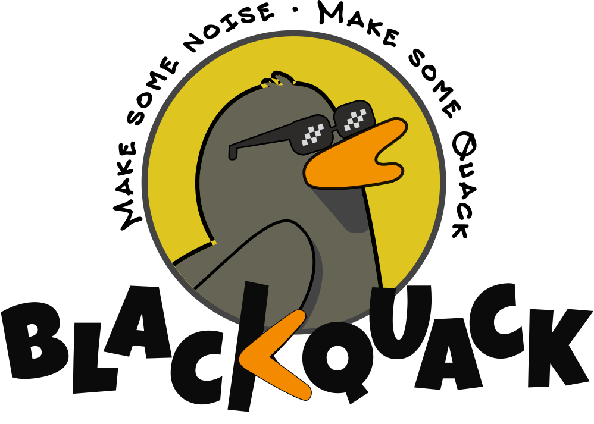

Crear requiere tiempo. La tecnología debe hacerlo posible.
Convertimos las tablets y celulares del colegio en estaciones de animación cuadro a cuadro seguras, sin internet y pensadas para un curso completo: niños y niñas que crean con las manos, y docentes que ven el proceso de cada uno.
Funciona mejor en un teléfono o tablet Android con Chrome. Prototipo v0.1.0.

La iniciativa
Una plataforma para crear animación en el aula
Facilitar la enseñanza y experimentación de la animación cuadro a cuadro en contextos educativos, promoviendo el pensamiento creativo, la expresión artística y el uso significativo de la tecnología en el aula.
Para lograrlo, convierte las tablets y celulares del colegio en estaciones de trabajo seguras, donde niños y niñas de 8 a 12 años crean solos o en grupo mientras el docente acompaña el proceso de cada uno.
Sin publicidadSin salidas a otras appsSin depender de internet
01 · El problema
Una generación que recibe el resultado antes que el esfuerzo.
Redes sociales, videojuegos e IA generativa comparten una lógica: la recompensa llega primero. Es un fenómeno global, y la OCDE ya mide su costo en la sala de clases.
6,6% → 11,4%
Lectores «apresurados», que responden rápido y mal, casi se duplicaron entre 2018 y 2025 (PISA 2025).
20,1%
Estudiantes chilenos con clases de ciencias sin distracción por dispositivos; en la OCDE es 39,2%.
+4,5 h
Diarias de pantalla por entretención entre los 8 y 12 años; casi nada de ese tiempo es para crear.
En pensamiento creativo, Chile iguala a la OCDE generando ideas, pero queda bajo justo en evaluar y mejorar lo que crea. Y desde 2026 la Ley 21.801 saca los celulares personales de la sala, pero las apps de creación están hechas para una persona, no para un curso de 30.
La oportunidad · Industrias creativas
Un sector en auge, sin herramientas para la infancia
2,2%
del PIB de Chile viene de las industrias creativas.
150 mil
empleos genera el sector en el país.
Oscar
«Historia de un Oso» (2016): la animación chilena compite en el mundo.
Chile forma animadores en la universidad, pero no hay herramientas que impulsen la creatividad desde la infancia, dentro del colegio.
02 · La solución
Un taller de animación que funciona en el aula.
1. Abre la sala
El docente proyecta un QR y las tablets se unen en segundos.
2. Fija los equipos
Modo kiosco: sin salir a otras apps y sin publicidad.
3. Crean en grupo
Solos o en equipo, con roles y sin internet.
4. Se ve el proceso
Docente y UTP ven el avance de cada estudiante.
Funcionalidades, en simple
Captura cuadro a cuadro con «papel cebolla» y una línea de tiempo fácil de ordenar.
Perfiles sin correo: apodo, avatar y clave de imágenes. Un niño de 8 años entra solo.
Proyectos de grupo con roles que rotan, y registro de quién hizo cada cuadro.
Funciona sin internet: todo ocurre en el dispositivo.
Versiones: cada intento se guarda para comparar, corregir y mejorar.
Código escolar: el niño sigue animando fuera de la clase y cada avance se registra.
Panel docente y reporte UTP ligado a los objetivos de aprendizaje chilenos.
Modo proyección y exportación en video.
Nuevo · Código escolar
Con su código escolar, el niño sigue animando fuera de la clase y cada avance queda registrado como actividad de su proyecto escolar. El docente lo ve en su panel.
Fase 1 · BUILD
3.° a 6.° básico · 8 a 12 años
Flujo guiado y lúdico, donde la metodología ya está probada.
Fase 2 · Crecimiento
7.° básico a 4.° medio · 12 a 17 años
Flujo propio para jóvenes sobre la misma base de aula.
No es una idea: ya lo probamos un año escolar. Un laboratorio controlado dentro de la sala de clases para evaluar la didáctica y la metodología: una hora semanal, de abril a noviembre.
32
sesiones de una hora
15
niños con solo 2 celulares
2×
el interés duplicó lo esperado: lista de espera del doble
$3 M
recaudados: 15 niños × $25.000 al mes × 8 meses

Universidad de Valparaíso
Apoyo formal de la Escuela de Diseño: laboratorios, infraestructura y estudiantes para prototipar y testear la app.
El colegio repite en 2027
Por los resultados, el taller vuelve, esta vez usando nuestro MVP.
Prototipo funcionando
Demo pública en demo.blackquack.cl y muestra en preFIDA Escolar 2026.
05 · Diferenciación
Talleres que no escalan y apps que no entran a la sala.
Talleres / robótica
Stop Motion Studio
BlackQuack
Escala sin sumar personas
✕
✓
✓
Sala por QR y tablets fijadas
✕
✕
✓
Grupos con registro de quién hizo qué
✕
✕
✓
Panel docente y reporte UTP
✕
✕
✓
Metodología con currículum chileno
Parcial
En inglés
✓
Código escolar: sigue fuera de clase
✕
✕
✓
Venta a colegios y soporte en español
✓
✕
✓
Stop Motion Studio recomienda trabajar en grupos con roles, pero no registra quién hizo qué. BlackQuack convierte esa recomendación en funcionalidad.
06 · Modelo de negocio
Paga el colegio. Los niños crean gratis.
SaaS B2B con licencia anual por colegio, sin hardware ni instalación. Docentes y estudiantes no pagan.
Gratis
Personal
$0 para siempre
Captura y línea de tiempo
Versiones en el dispositivo
Exporta 720p con marca de agua
Puerta de entrada para familias
Gratis con licencia
Código escolar
$0 incluido en el colegio
Sigue animando fuera de clase
Cada avance se registra en su proyecto
El docente lo ve en su panel
Sin correo ni datos personales
Talleres
Licencia Taller
$290.000 al año
Hasta 60 estudiantes y 2 docentes
Sala por QR, kiosco y grupos
Panel docente y códigos escolares
★ Recomendado
Licencia Colegio
$790.000 al año
Hasta 300 estudiantes, docentes sin límite
Reporte UTP por objetivos de aprendizaje
Metodología, implementación y soporte
Redes y SLEP: cotización por volumen, desde $2.000 por estudiante. Capacitación docente aparte. Plan Personal pago: $2.990 al mes.
Proyección (hipótesis, escenario base)
Horizonte
Colegios
Ingreso anual
Motor
Año 1
5
CLP 2,0 M
Colegios fundadores en Valparaíso
Año 2
30
CLP 23,7 M
Redes de colegios y flujo 7.° a 4.° medio
Año 5
300
CLP 237 M
SLEP, módulos y Latinoamérica
En el escenario ambicioso, el año 5 llega a 900 colegios y cerca de CLP 990 M anuales. Margen bruto objetivo sobre 85%. Las cifras se validan en BUILD.
07 · Por qué Chile y por qué escala
Chile es el laboratorio. Latinoamérica es el mercado.
Por qué partir aquí
Tenemos dónde pilotear, las industrias creativas están en auge, la animación chilena ganó un Oscar y la Ley 21.801 empuja a usar los equipos del colegio.
Por qué escala
El problema es global. Sin hardware, con implementación remota y un currículum que se carga como dato: adaptar a otro país no exige reprogramar.
El equipo
Quiénes lo construyen
Karen Bravo Villarroel
Líder del proyecto y CEO
Dedicación completa; conduce la validación comercial y el piloto.
Ingeniera en Marketing (UDP) y MBA en Gestión de Negocios (U. Central).
Mentora de la Incubadora Chrysalis PUCV desde 2024.

Paulo Correa Vargas
Cofundador, CPO y líder técnico
Docente de Animación Digital en la PUCV (2025) y parte del comité que diseñó su currículo.
Diseñador gráfico (ilustración y animación) y de interfaces; Magíster en Artes Mediales.
Lidera Animakids en el Colegio Montessori Yerpún.
Karen y Paulo trabajan juntos desde 2020.
Colaboración
Instituciones que nos acompañan

Colegio Montessori Yerpún
Institución educacional dispuesta a probar la plataforma en su taller de animación.
Escuela de Diseño, Universidad de Valparaíso
Su dirección manifestó el interés de la Escuela en explorar instancias de colaboración con BlackQuack Studio, reconociendo el potencial de la propuesta para vincular el ámbito universitario y el escolar.
Infraestructura y recursos técnicos: posible acceso a laboratorios y espacios de prototipado y experimentación audiovisual.
Validación y experiencia de usuario: evaluaciones de usabilidad con estudiantes de Diseño.
Vinculación y difusión: espacios de encuentro y exhibición de animación escolar, con el FIDA Escolar como referencia.
Carta de interés de la Dirección de la Escuela de Diseño, noviembre de 2026.
Prueba el prototipo

En una época de inmediatez, devolvemos a los niños el tiempo de crear.